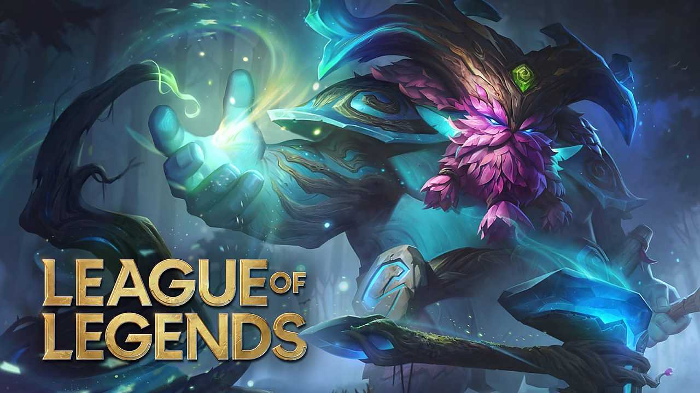
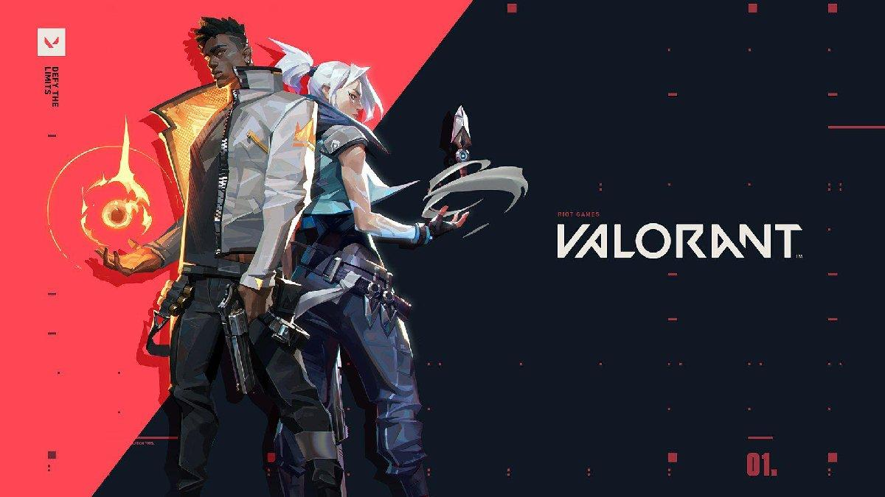
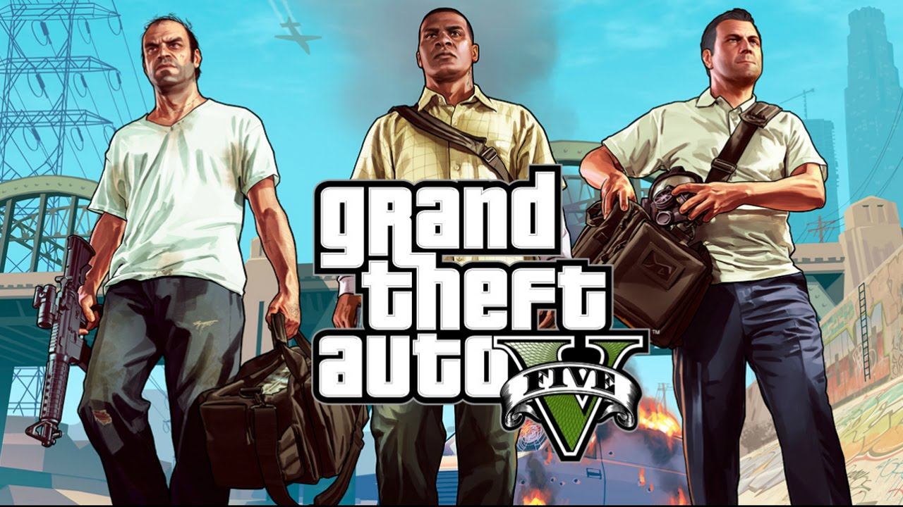
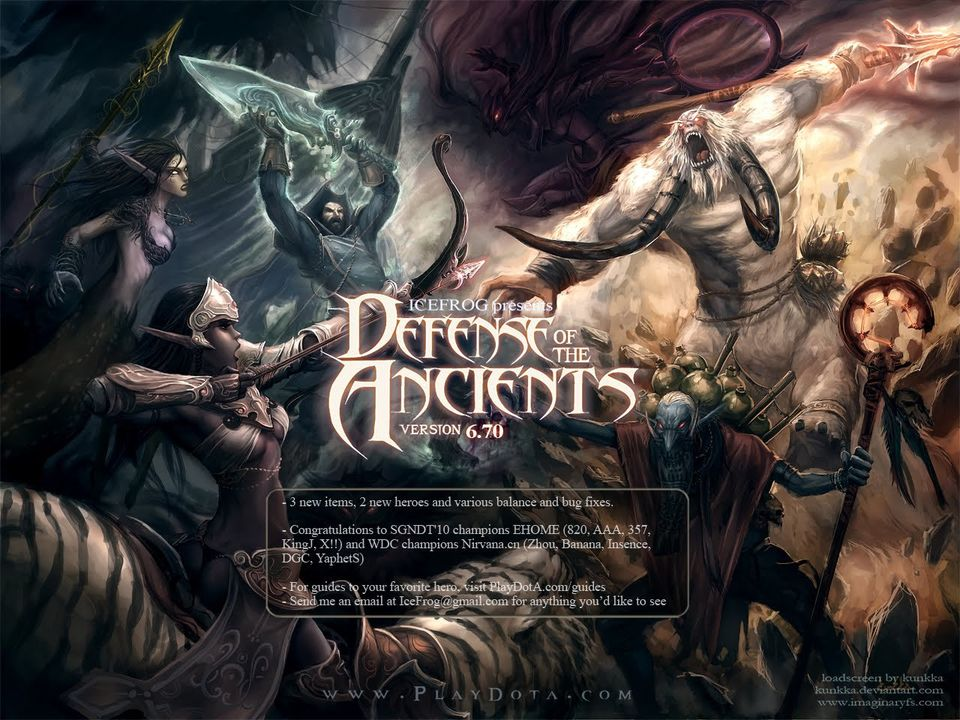
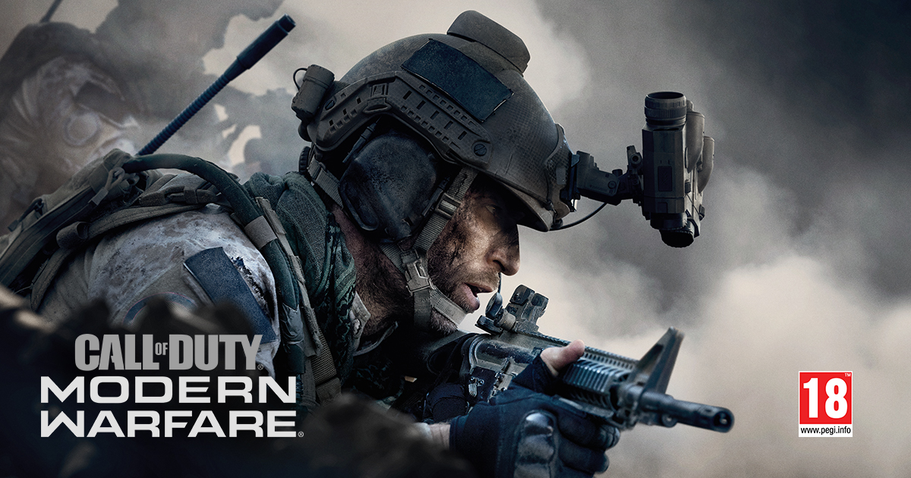
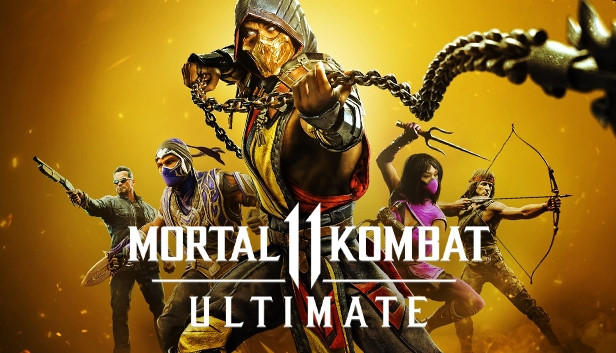
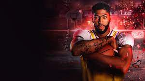

Haluk Can SARIÖZ
Hakkımda
Merhabalar Ben Haluk Can SARIÖZ. Ankara Üniversitesi Bilgisayar Mühendisliği bölümünü 3.39/4.00 ortalaması ile mezun oldum.
Frontendle uğraşmaya 2 yıl önce başladım ve kendimi ortalama olabilecek bir seviyede olduğumu düşünüyorum. Şuanda patika.devin kariyer patikalarıyla
kendimi geliştirmeye çalışıyorum. İlk defa yazılım öğrenmek istiyorsanız bu site size projelerle çok rahat bir şekilde yardımcı oluyor.
Şuan hazırlamış olduğum bu ufak çaplı web sitesi ile ilk internet sitesi oluşturma deneyimini gerçekleştiriyorum. Herkese kendi
patikasında bol şanslar...
Hobilerim
Aslında hobilere pek zaman kalmıyor ama boş zamanlarımda patika.dev üzerinden eğitimlerimi tamamlamaya çalışıyorum.
Daha önceden bilgisayar oyunları oynardım. Basketbol oynamayı seviyorum ve Denizli . Uzun süre piyano kursuna gitmiştim ve piyano çalmayı baya iyi biliyordum.
Uzun süre satranç oynamıştım ve turnuvalara da katılmıştım.
Oynamış Olduğum Bilgisayar Oyunları
LEAGUE OF LEGENDS

League of Legends oyununda, oyuncular benzersiz yeteneklere sahip bir şampiyon rolünü üstlenirler ve diğer bilgisayarlardaki şampiyon oyunculardan oluşan bir takıma karşı savaşırlar. Amaç genellikle rakip takımın, üstün savunma taktikleri ile korunan ve üssün kalbinde yer alan “Nexus” isimli yapısını yok etmektir. Ancak farklı oyun modları sayesinde, değişik hedefler, kurallar ve haritalar eşliğinde de oynanabilir.
LEAGUE OF LEGENDS oyununu buradan indirebilirsiniz.
VALORANT

Riot Games’in heyecanla beklenen 5'e 5, birinci şahıs, taktiksel nişancı oyunu VALORANT bugün oyuncularla buluştu. Dünyanın dört bir yanındaki oyuncular, www.PlayVALORANT.com adresinden VALORANT hesabı oluşturup oyunu bilgisayarlarına ücretsiz bir şekilde indirerek oynamaya başlayabiliyor.
VALORANT, yüksek duyarlılığa sahip nişancılığa, silah çeşitliliğine, kendine has yetenekleri olan ajanlara sahip bir oyun. Oyunculara üst düzey rekabet sunan bir deneyim için tasarlanmış haritalara sahip, çok oyunculu bir oyun olan VALORANT'ta beşer oyuncudan oluşan iki takım, saldıranların savunuculara karşı olduğu 24 turda mücadele ederek tur tabanlı mücadeleleri kazanmaya çalışıyor.
Oynaması ücretsiz olan VALORANT, dünyaya yayılmış bir rekabeti mümkün kılacak şekilde çok çeşitli PC donanımlarında çalışması için optimize edilmiş.
VALORANT oyununu buradan indirebilirsiniz.
GRAND THEFT AUTO 5

Grand Theft Auto 5, San Andreas eyaletinde geçiyor. Bu bilgisayar oyununda oyuncular, oyunun üç karakterinin hayatına tekrar tekrar girip çıktıkça, oyunun iç içe geçmiş hikayesinin birçok versiyonunu yeniden yaşama şansı buluyorlar. Bu üç ana karakterin farklı alanlarda farklı güçleri ve yetenekleri bulunuyor ve oyuncular bu karakterler arasında geçiş yapabiliyorlar. Her bir karakterde banka soygunculuğundan uçak kullanımına kadar birçok farklı yeteneği tecrübe edebiliyorlar. Önceki oyunlarda da olduğu gibi, karakterlerin saç, kıyafet ve dövmeleri özelleştirilebiliyor. Ayrıca kullanılan araçlar da modifiye edilebiliyor.
GRAND THEFT AUTO 5 oyununu buradan indirebilirsiniz.
DOTA (DEFENCE OF THE ANCİENT)

Dota, Valve Corporation tarafından geliştirilen ücretsiz bir çevrimiçi, çok oyunculu savaş arenası oyunudur. 2003’de geliştirilen bu bilgisayar oyununda, iki rakip takımın (Radiant ve Dire) her biri beş oyuncudan oluşur. Oyunu kazanmak için düşmanın “Ancient” adı verilen temel yapısını yok etmek gerekmektedir. Oyuncular bu yapıyı yok etmek için “heroes” adı verilen karakterlerin kontrolünü üstlenirler ve bu amaç uğruna savaşırlar. 2013 yılında Dota’nın devamı olarak piyasaya sürülen Dota2 ise şu an dünyanın dört bir yanından ekiplerin, çeşitli profesyonel liglerde ve turnuvalarda oynadığı büyük bir e-spor sahnesine sahiptir
DOTA (DEFENCE OF THE ANCİENT) oyununu buradan indirebilirsiniz.
CALL OF DUTY: MODERN WARFARE

Call of Duty: Modern Warfare, gerçekçi ve modern bir dünyada geçen ve birçok oyuncu tarafından “gelmiş geçmiş en popüler oyun” olarak kabul edilen bir oyundur. Oyunun hikayesi, İngiliz SAS güçleri ve bir CIA subayının, kurgusal Urzikistan ülkesinin isyancılarıyla bir araya gelerek, ülkeyi işgal eden Rus güçlerine karşı verdikleri mücadele etrafında dönüyor. En iyi online çok oyunculu oyun ödülüne sahip olan Call of Duty: Modern Warfare, artık 64 oyuncuyu destekleyen kara savaşı formatı gibi yeni özelliklere de sahip. Eğer siz de eski Call of Duty oyunlarını özlediyseniz, Season Pass olmamasının ve Cross Play desteğinin etkisiyle uzun yıllar boyunca oynanacak bu yapıma kesinlikle şans verebilirsiniz.
CALL OF DUTY: MODERN WARFARE oyununu buradan indirebilirsiniz.
FİFA 20
Fifa serisinin 27. Oyunu olan FIFA 20 de, serinin diğer oyunlarına fark olarak “VOLTA Football” adlı yeni bir içeriğe konsantre olunuyor. 11’e 11 oynanışa alternatif olan bu mod, bildiğimiz klasik maçlardan ziyade küçük sahalardaki sokak futboluna odaklanıyor. Mesela üçe üç (kalecisiz), dörde dört (kalecili) ve beşe beş (kalecili) maçlar oynamak için çeşitli seçenekler içeriyor. Dolayısıyla bu mod daha çok bireysel beceri veya bağımsız oyuna önem veriyor. Ayrıca oyuncular, kendi oyuncularını cinsiyet, kıyafet, ayakkabı, şapka ve dövmelere göre istedikleri gibi kişiselleştirebiliyorlar. Futbolun değişmez oyunlarından Fifa 20, tüm bu yeni özellikleriyle sizi adeta sahalara bağlayacak.
FİFA 20 oyununu buradan indirebilirsiniz.
MORTAL KOMBAT 11

Seride bulunan önceki iki oyun gibi Mortal Kombat 11 de 2.5D oyun deneyimi sağlayan bir dövüş oyunudur. Mortal Kombat 11, NetherRealm Studios tarafından geliştirilmiştir ve Warner Bros. Interactive Entertainment tarafından yayınlanmıştır. Hiç olmadığı kadar derin ve kişiye özel bir deneyim sağlar. Özel karakter varyasyonları ile dövüşçülerinizi istediğiniz gibi kişiselleştirebilirsiniz. 25 yıllık Mortal Kombat efsanesi bu seride, klasik dövüşçülerinden oluşan bir kadro ve rakipsiz, sinematik hikaye moduyla oyuncularla buluşuyor. Ayrıca yeni grafik motoru ile eşsiz ve gerçekçi bir dövüş deneyimi sağlıyor.
MORTAL KOMBAT 11 oyununu buradan indirebilirsiniz.
FORZA HORİZON 4
Çocukluğundan bu yana araba yarışlarını seven ve başka hiçbir oyuna değişmeyenler parmak kaldırsın! Forza Horizon 4 tek başına veya başkalarıyla takım kurup oynayabileceğiniz muhteşem bir yarış oyunu. Ayrıca, gerçek hayattaki birçok modifiye ve yarış arabasının performans ve kullanım özelliklerini bu oyunda yakalayabilir ve Birleşik Krallık’ın kurgusal temsili bölgelerinde 450’den fazla lisanslı aracı kullanabilirsiniz.
FORZA HORİZON 4 oyununu buradan indirebilirsiniz.
NBA 2K20

NBA 2K20, Visual Concepts tarafından geliştirilen ve NBA temelli 2K Sports tarafından yayınlanan bir basketbol simülasyon video oyunudur. Bu oyun, NBA 2K serisinin 21. oyunu. NBA 2K19’un halefi olan 2K20’de oyunun standart baskısının kapağında Los Angeles Lakers oyuncusu Anthony Davis ve “Legend Edition” kapağında ise Dwyane Wade bulunuyor. Oyuncuların oyundaki temel amacı, gerçek hayattaki NBA oyunlarını veya kendi özelleştirdikleri oyuncular ve takımlarla kurdukları oyunları oynayarak kazanma yolunda adımlar atmaları veya kariyer yapmalarıdır. Çeşitli oyun modları mevcuttur ve birçok ayar oyuncuların isteğine göre kişiselleştirilebilir.
NBA 2K20 oyununu buradan indirebilirsiniz.
Yapmış olduğum basit projemi indirip incelediğiniz için teşekkür ederim.